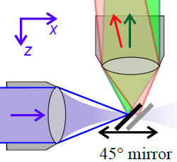
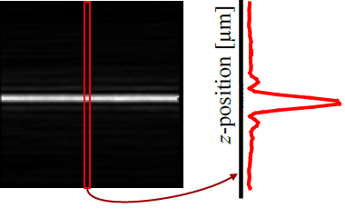

$$qf_commondoc_header.start$$ $$qf_commondoc_header.end$$
Introduction
$$startbox_note$$
The data for this tutorial can be found in the directory $$plugin_info:examplesdir:spim_lightsheet_eval$$/test_data/. An example project is available in $$plugin_info:examplesdir:spim_lightsheet_eval$$/.
You can open it by clicking on File | Special Project Tools ... | Open Example Projects ... and selecting the project in the directory spim_lightsheet_eval.
The data for this tutorial was acquired on a SPIM with a pixel size of 400nm and with a x-step-size of the mirror of 1000nm.
$$endbox$$
In this tutorial we will perform a full lightsheet analysis for a dual-color SPIM. The tutorial is also usable for single-color SPIMs. the differences are indicated in each tutorial step. A lightsheet analysis is usually done in the following way: A mirror is placed under 45° in front of the detection objective. This way, the mirror directly images the lightsheet at a certain x-position onto the camera in the microscope. The obtained images are shown on the right:
 
The red graph is a cut through the image along the indicated line (red rectangle). Then each such cut in every frame of the image stack (and possibly every color channel) is fitted with a Gaussian function (or another suitable function, such as a slit-function). The fit results are average over each frame and finally the properties of the lightsheet (width, ...) can be checked at different positions of the mirror/different positions in the direction of propagation of the light.

Tutorial